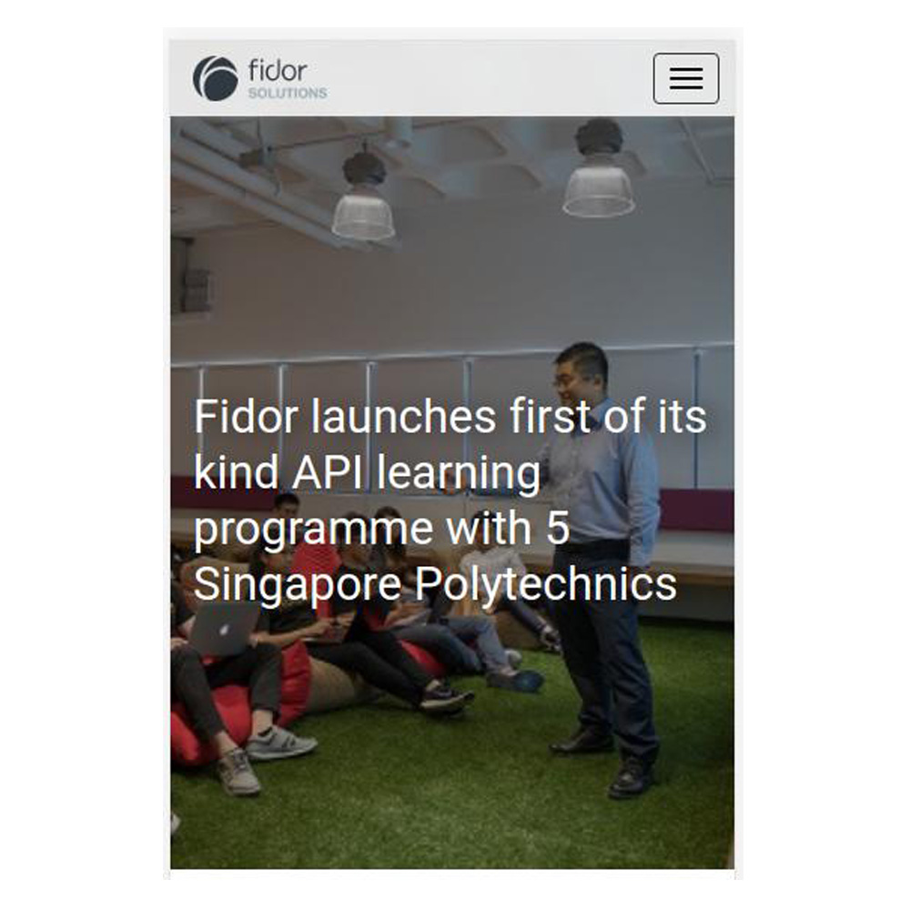

Sandbox API System

Aim
To provide Sandbox system to Polytechnic to enrich their learning experience of banking APIs
LINK
Involvement
I worked as an Intern in Fidor based in Germany, Munich, for little less than 6 months. I was tasked with assisting the development team on several small tasks, being relatively inexperienced at that time, my involvement was little to moderateÂ
Back